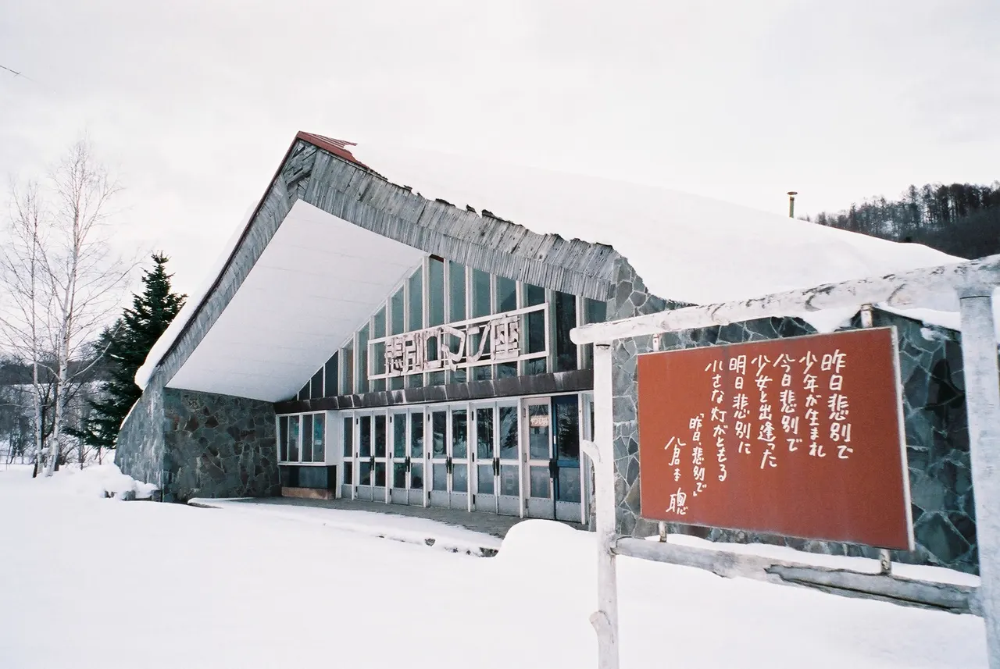
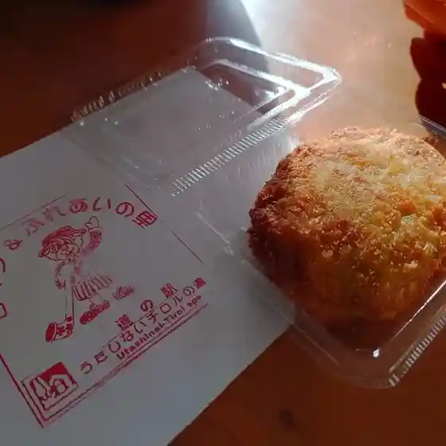
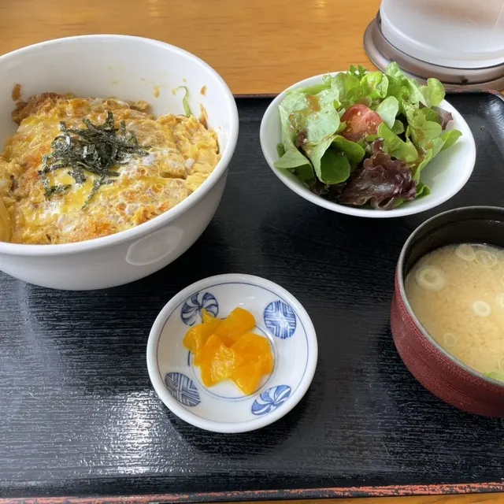
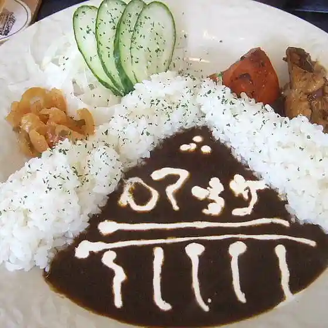
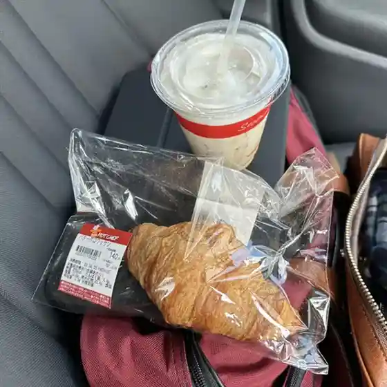
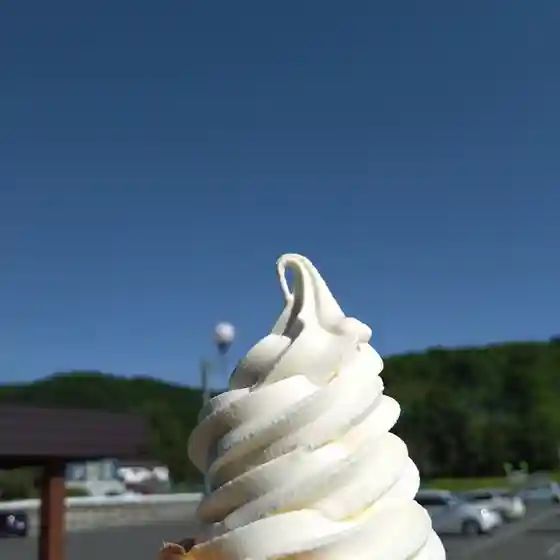
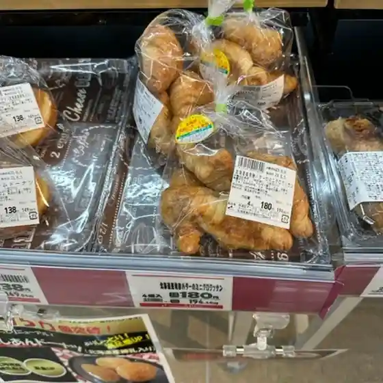

Utashinai
Utashinai · Hokkaido
Utashinai
Highlighted on the Hokkaido map.

Stay
うたしない チロルの湯
Utashinai Tirol no Yu
Onsen lodging in Utashinai, Hokkaido.
Dining
軽食りんどう

Keishoku Rindou
レストラン チロル

Resutoran Chiroru
かもい岳国際スキー場

Kamoi Gaku Kokusai Sukii Ba
カフェ ロマンザ

Kafe Romanza
乙女

Otome
セイコーマート 歌志内東光店

Seikoomaato Utashinai Toukou Mise
道の駅チロルの湯カフェ

Michi No Eki Chiroru No Yu Kafe
Da*marche 歌志内店

Da*Marche Utashinai Mise
セイコーマート 歌志内店
Seikoomaato Utashinai Mise